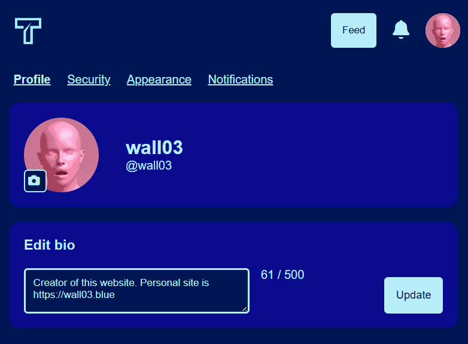

Twidilers is a social media platform I wrote with Oliver and Derin. It was written with a Flask backend and a Jinja frontend, but eventually morphed into a reactive JavaScript application. Without starting with React/NextJS the project had to manually fetch backend APIs using vanilla JS. This is not my finest work, but it taught me that planning and coordination with other is important.
The codebase and work was split between us. I managed the look and feel of the frontend, while Derin worked on the backend handling, and Oliver focused on the database and preparing for deployment. However, as our interests in this project faded in and out, we all became familiar with the entire codebase. I learned how everything fitted together and ended up rewriting the feed into a JavaScript spagetti mess that was absolutely not necessary. Why did I write it? Because. It felt like something this sort of application needed so I built it. And then I had to build it again. I rewrote the damn thing like 3 times because it was garbage.
I kept on adding features without talking to Oliver or Derin first. They didn't want to implement them because it wasn't something they thought was important. I ended up having to learn most of the stuff that was going on in the backend.
For an example of what I was working on, let's look at this settings page

The tabs at the top refer to different pages. The original implementation I did was